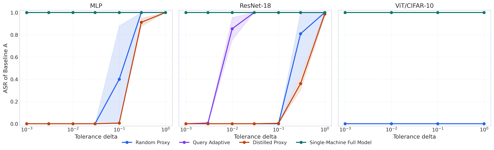
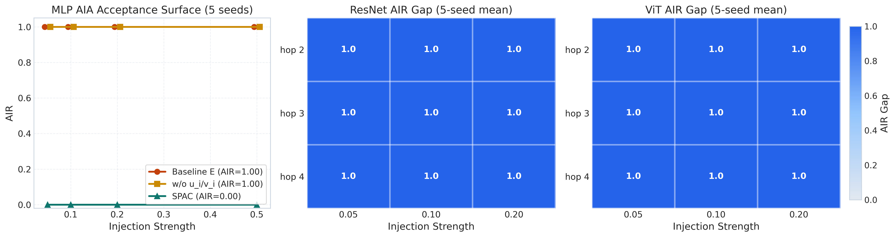
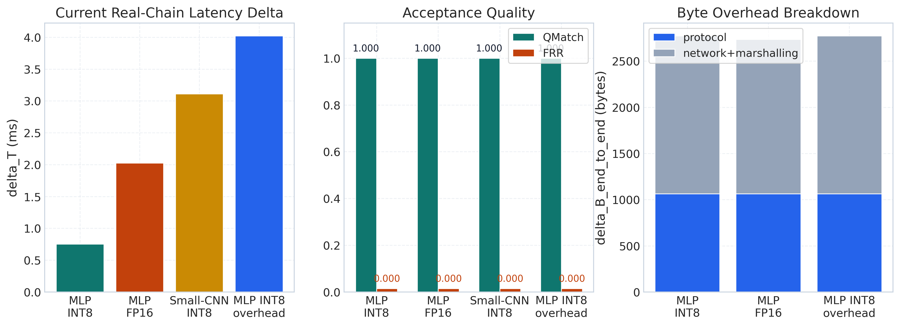
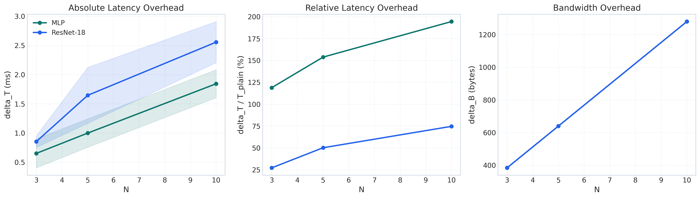

Abstract
Distributed neural inference executes ordered model shards across independently managed devices, creating a need to authenticate session participation and activation transfers. We propose SPAC (Session-bound Path Authentication Chain), which binds device identities, ordered hop records, registered shard claims, and cross-hop encoded-activation continuity into one proof. In a corruption game where at most k of N devices may be compromised (k < N), a reduction to message authentication code (MAC) unforgeability bounds fresh false attribution of honest-device participation. At the claim-binding tier, SPAC authenticates registered claims and encoded transfers but does not provide device-side hardware attestation or prove the correctness of every inference step; hardware-endorsed measurements require additional evidence. No accepted forgery was observed in the tested proxy, topology, and digest-inconsistent injection workloads. SPAC adds 0.65–2.56 ms in the evaluated multilayer perceptron (MLP) and ResNet configurations, with proof metadata growing linearly in the chain length. The encoding study exposes successful within-cell substitutions under float forwarding. Authenticating transmitted integer codes removes this substitution mechanism on those links; the corresponding ResNet experiment observed an accuracy difference of 0.01 percentage points. These results distinguish authenticated path records and encoded transfer consistency from the semantic correctness of compromised computation.
Results at a Glance

Proxy attacks. ASR–δ curves of four proxy attacks (N = 5, five seeds). The full-model substitute stays at ASR = 1 at every tolerance, while weaker proxies become acceptable only as δ is relaxed. SPAC rejects all of them at every δ (FAR = 0 in all 252 measured cells).

Activation injection under real deployment. Continuity binding versus weaker verification across all covered MLP, ResNet-18, and ViT configurations: zero SPAC acceptance events in every cell, with a one-sided 95% upper bound of 0.93% per cell.

Cross-host mixed-stack chains. End-to-end chain execution across heterogeneous devices (4070TiS → 4090D → DaVinci Mini CPU-mode stack) confirms compatibility of the proof chain across real hardware.

System overhead. SPAC adds 0.65–2.56 ms per session in the evaluated MLP and ResNet configurations, with proof metadata growing linearly in the chain length.
BibTeX
@misc{xiang2026spac,
title = {SPAC: Session-Bound Path Authentication for Distributed Neural Inference},
author = {Xiang, Zhengzhe and Chen, Yinlin and Cheng, Guanjie and Taheri, Javid and Deng, Shuiguang},
year = {2026},
howpublished = {Manuscript submitted to IEEE Transactions on Dependable and Secure Computing},
url = {https://nullion2021.github.io/SPAC/}
}